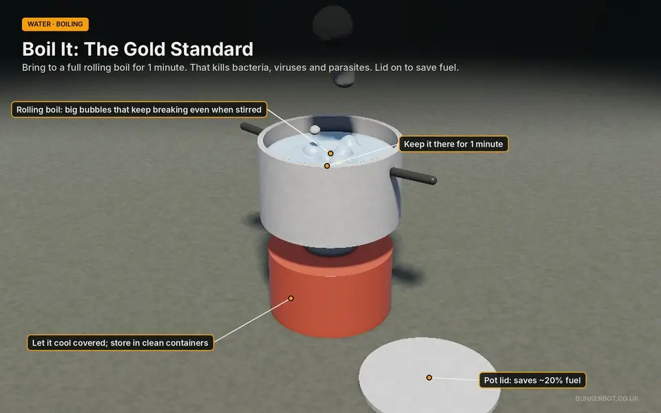
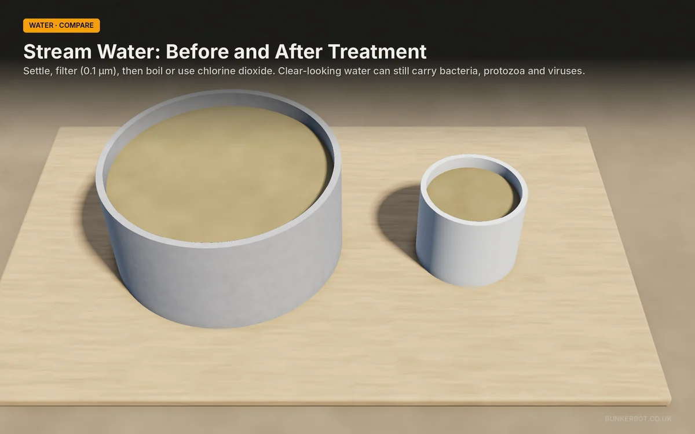
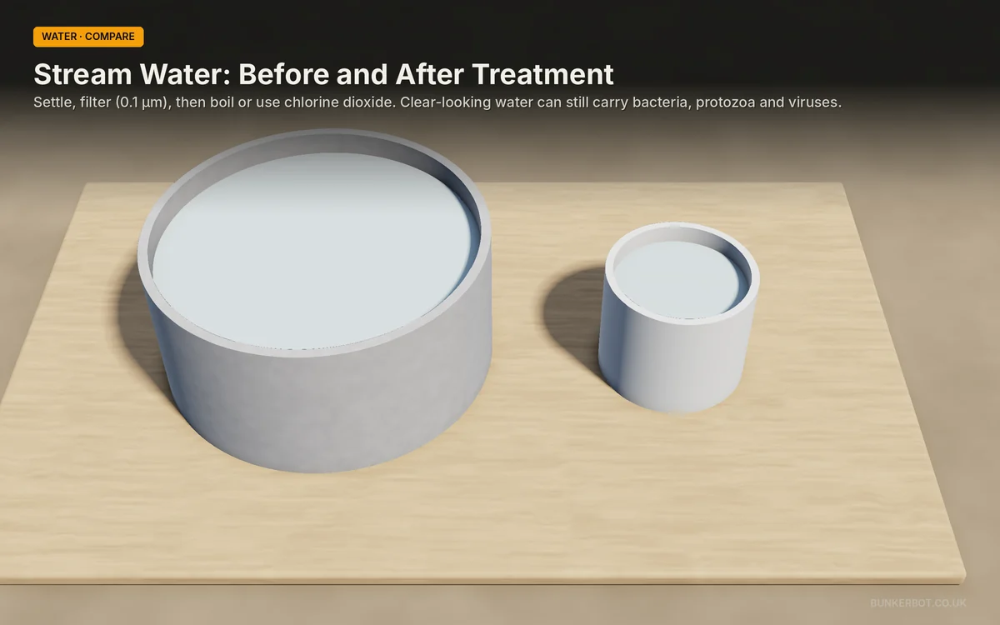
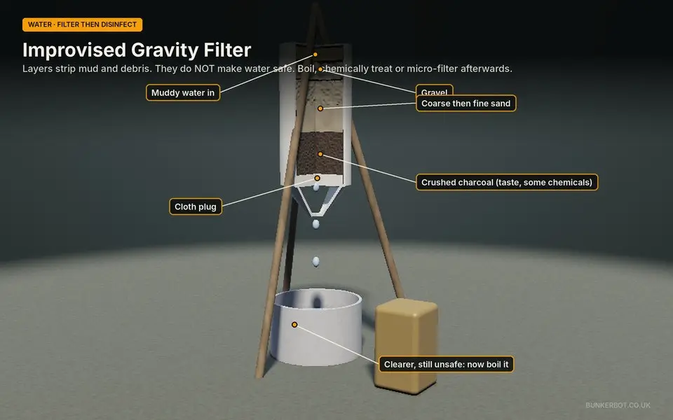
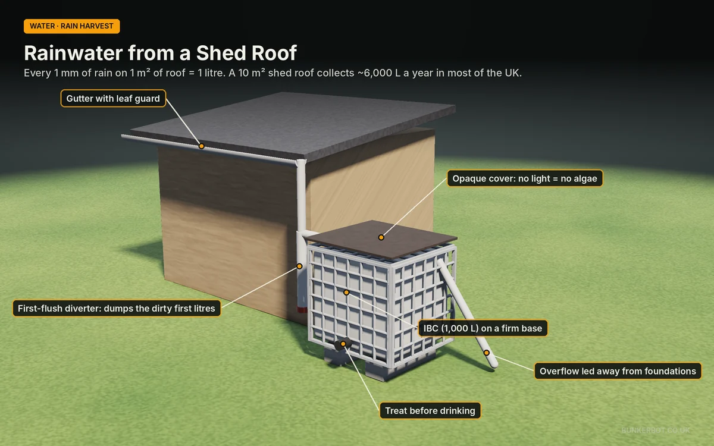
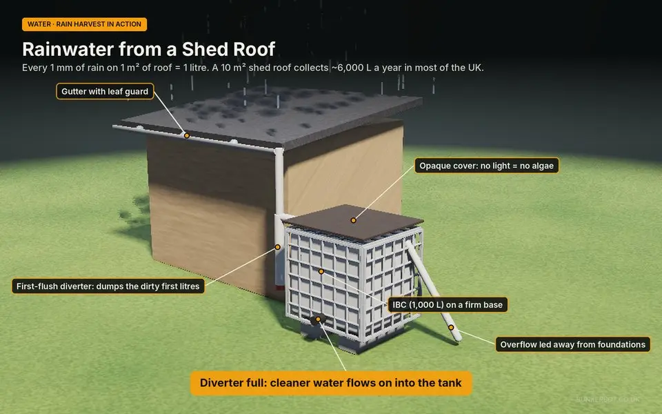

Water: Finding, Treating & Storing It
Britain is wet, but very little of that water is safe to drink untreated.
Store water now: the UK government's Be Ready advice (Oct 2026) is at least 3 litres of drinking water per person per day for 3 days, and more for cooking, washing, babies and pets. Treat all outdoor water in the UK. Livestock are everywhere upstream. Boiling is the gold standard: a rolling boil for 1 minute kills bacteria, viruses and parasites. Filtering ≠ disinfecting. Cloth, sand and charcoal clear water; they don't make it safe. This page complements Food & Water and Water Systems (wells, rain harvesting at scale, gravity distribution).
1. How Much Water You Need
| Use | Per person per day |
|---|---|
| Drinking (minimum) | 3 L (more in heat, exertion, illness, breastfeeding) |
| Basic cooking + minimal hygiene | +2–7 L (≈ 10 L total is comfortable) |
| Toilet flushing (one bucket flush) | 6–10 L each time; use a bucket toilet instead (below) |
Household 3-day minimum (drinking only): 1 person 9 L · 2 people 18 L · 4 people 36 L. Prepper target: 14 days × 4 L × people, plus a way to treat more.
2. Storing Water at Home
- Bottled water: the easiest option. Check the dates and rotate it into daily use.
- Tap water you store yourself: use food-grade containers (water jerrycans, water bricks or 25 L stackable containers), cleaned and rinsed. Fill them from the cold tap, seal them, and date them. Replace every 6 months.
- Store cool, dark and off concrete floors (on a pallet), away from chemicals and fuel. Plastic is slightly permeable to fumes.
- Hidden reserves: the hot-water cylinder (60–200 L; switch off the heat and the supply first), the toilet cistern (not the bowl, and not if you use cistern blocks), and filled baths in a forecast emergency.
- Never use milk jugs (bacteria, they degrade), containers that held chemicals, or non-food plastics.
3. Finding Water in the UK
| Source | Quality (before treatment) | Notes |
|---|---|---|
| Rain (collected directly) | Best natural source | Off a clean tarp or roof via a first-flush diverter. Still treat it: bird droppings and roof debris. |
| Springs (emerging from the ground) | Often good | Collect at the exit point. Still treat it. |
| Fast upland streams | Fair | Sheep and deer upstream; treat it. |
| Lowland rivers & canals | Poor | Farm run-off, sewage overflows, boats. Filter, then disinfect. |
| Ponds & lakes | Poor; algae risk | Avoid stagnant water and scum. |
| Dew & condensation | Clean but slow | Tie a cloth round your ankles and walk through dewy grass at dawn, then wring it out. A plastic bag over leafy branches gives ~100–500 ml a day. |
| Snow | OK if clean | Melt it before drinking: eating snow lowers core temperature. |
Signs of water: green vegetation lines, valley bottoms, birds flying low at dawn and dusk, insects, animal trails converging downhill. OS maps: blue lines, springs ("Spr") and wells ("W").
4. UK Water Hazards
| Hazard | Where | Treatment note |
|---|---|---|
| Cryptosporidium & Giardia (parasites) | Anywhere with livestock, deer or sewage | Resistant to standard chlorine/NaDCC tablets. Boil, use a ≤ 1 micron filter, or chlorine dioxide with a long contact time (up to 4 h). |
| E. coli, Campylobacter, Salmonella | Farmland run-off, sewage | Killed by boiling, chemicals and UV; removed by filters |
| Viruses (norovirus, hepatitis A) | Sewage, storm overflows | Boil, chemicals or UV. Most filters don't remove viruses. |
| Leptospirosis (Weil's disease) | Rat urine in still and slow water, canals | Boil or treat; cover cuts; don't swim in canals |
| Blue-green algae (cyanobacteria) | Still water in warm months: green scum, paint-like streaks | Toxins are NOT destroyed by boiling or filters. Don't use it. Keep dogs out too. |
| Agricultural chemicals (nitrates, pesticides, slurry) | Lowland arable areas, after rain | Only activated-carbon filters reduce some. Choose a cleaner source. |
| Old mine water (metals) | Cornwall, Wales, the Pennines, Cumbria: orange-stained streams | Avoid. Boiling concentrates metals. |
| Sea / brackish water | Coasts, estuaries | Never drink it. It needs distillation. |
5. Treatment Methods Compared
| Method | Bacteria | Viruses | Crypto / Giardia | Chemicals | Notes |
|---|---|---|---|---|---|
| Boiling (rolling, 1 min) | ✅ | ✅ | ✅ | ❌ | Needs fuel: roughly 100 g of gas per 8–10 L boiled. Cover the pot to save fuel. |
| Hollow-fibre filter (0.1–0.2 µm, e.g. squeeze/gravity) | ✅ | ❌ | ✅ | ❌ | Fast, no taste. Frost kills it: keep it in your sleeping bag in winter. Backflush it. |
| Filter + carbon | ✅ | ❌ (unless "purifier"-rated) | ✅ | Partly | Improves taste; reduces some chemicals |
| "Purifier" filters (0.02 µm or electro-adsorptive) | ✅ | ✅ | ✅ | Partly | The best single portable unit; pricier |
| Chlorine dioxide tablets | ✅ | ✅ | ✅ (slowly, up to 4 h) | ❌ | The best chemical option for UK water; 2 tablets per litre if cold or crypto is suspected |
| NaDCC / chlorine tablets (Puritabs, Aquatabs) | ✅ | ✅ | ❌ crypto | ❌ | Long shelf life; good for storing clean water; pair with a filter |
| UV pen / bottle | ✅ | ✅ | ✅ | ❌ | Water must be clear; needs batteries |
| SODIS (clear PET bottles in full sun 6 h+) | ✅ | ✅ | Partial | ❌ | Unreliable in UK cloud: emergency only |
| Distillation | ✅ | ✅ | ✅ | ✅ (most) | Slow, fuel-hungry; the only answer for seawater |
| Plain unscented bleach | ✅ | ✅ | ❌ crypto | ❌ | Last resort: ~2 drops of 5–6% plain sodium hypochlorite per litre of clear water, then wait 30 min. Use only bleach with no added scents or detergents. |
filter (removes parasites and sediment) + chlorine dioxide or boil (kills viruses). At home in an outage: boil.



6. The Improvised Filter (Then Disinfect)

- Settle first: let muddy water stand for an hour and pour off the clearer top.
- Pre-filter through cloth (a buff, a sock, a coffee filter) to catch debris.
- Bottle filter, top to bottom: gravel → coarse sand → fine sand → crushed charcoal from your fire (not ash) → a cloth plug in the neck.
- Pour slowly; discard the first litre (it washes the fines out).
- Then disinfect: boil for 1 minute, or use chlorine dioxide.
7. Rainwater Harvesting


- Yield: roof area (m²) × annual rainfall (mm) × 0.8 = litres per year. A 10 m² shed in an 800 mm area gives ≈ 6,400 L.
- First-flush diverter: discards the first ~1 L per m² of roof, which carries droppings and dust.
- Leaf guards and mesh on gutters and tank openings keep out leaves, mosquitoes and rodents.
- Opaque tank (or cover an IBC with black plastic or paint): light causes algae.
- IBC (1,000 L) on a level, strong base (a full one weighs 1 tonne).
- Overflow led away from foundations.
- For drinking: filter + disinfect, every time. Use it untreated for flushing, washing and the garden.
- At scale, with gravity distribution: see Water Systems.
8. Water When the Taps Stop
- Fill everything immediately if you have warning: bottles, pans, baths (for flushing).
- Turn off the stopcock if the mains might be contaminated, or if the house may freeze.
- Boil-water notice? Boil all water for drinking, teeth, food prep and baby feeds. Let it cool. Ready-to-feed baby formula is best.
- Toilets without water: the bucket method. Line the toilet or a bucket with two bags, add a handful of sawdust, cat litter or soil after each use, tie it off and store it outside in a lidded bin. Separating urine (urinate elsewhere) cuts smell and volume.
- Hygiene saves lives: hand sanitiser and wet wipes. Diarrhoea spreads fast when washing stops.
- Bottled-water stations: water companies deliver to priority-register customers. Join your water company's Priority Services Register if anyone in the home is vulnerable.
9. Dehydration
Signs: thirst, dark urine, headache, dizziness, tiredness, and confusion in later stages. Aim for pale straw-coloured urine. Sip regularly rather than gulping. Ration sweat, not water: work in the cool of the day and stay shaded. Oral rehydration sachets (or ½ tsp salt + 6 tsp sugar per litre of safe water) for diarrhoea. See Medical & First Aid.
10. Kit Tiers
Tier 0: Home basics (£20–60)
- 3 L per person per day for 3 days of bottled water (rotate)
- 20 NaDCC tablets + 20 chlorine dioxide tablets
- A large pan with a lid (for boiling)
Tier 1: Starter (£60–200)
- 2 × 20–25 L food-grade water containers per household, filled and dated
- Squeeze/hollow-fibre filter + 2 soft bottles
- Collapsible 10 L bucket, pre-filter cloth
- Bucket-toilet kit: buckets, bags, sawdust or cat litter
Tier 2: Committed (£200–800)
- Gravity filter for the household (ceramic + carbon) or a "purifier"-rated filter
- 14 days of stored water, or a tank, plus a treatment plan for more
- UV pen with spare batteries
- Rain butt / IBC with a first-flush diverter on the shed or garage
Tier 3: Serious (£800–3,000)
- Rainwater harvesting into a 2,000–5,000 L tank with a pump, plus a hand-pump backup
- Whole-house sediment + carbon filter stage for emergency use
- Stove + fuel reserve for boiling (roughly 100 g of gas per 8–10 L boiled)
Tier 4: Homestead / bunker
- Borehole or well with a hand pump (see Water Systems)
- Slow-sand filter + chlorination; a lab water test kit
- Solar still / distillation for brackish water
- Spare filter cartridges, seals and pump parts
Related Sections: Bug-Out Bags & Home Prepping → Fire Making & Staying Warm → Field Shelters → Water Systems → Food & Water